明确题材、人物特征、服装细节与画面风格。
专注于 AI 视频创作、视觉设定与视频剪辑。通过人物设计、场景构建和镜头叙事，将创意概念转化为具有氛围与情绪的动态影像。
以实际成片为核心，辅以角色设定与场景概念图，呈现从视觉构思到动态叙事的完整作品。
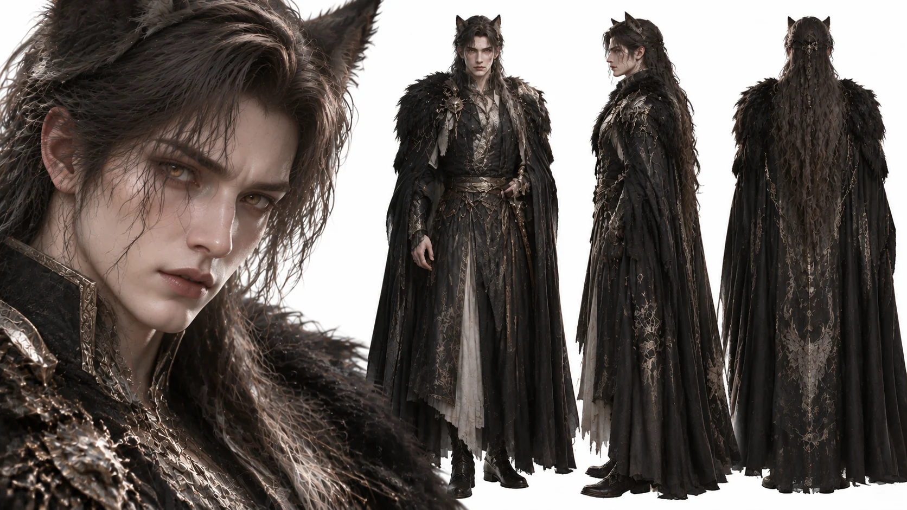
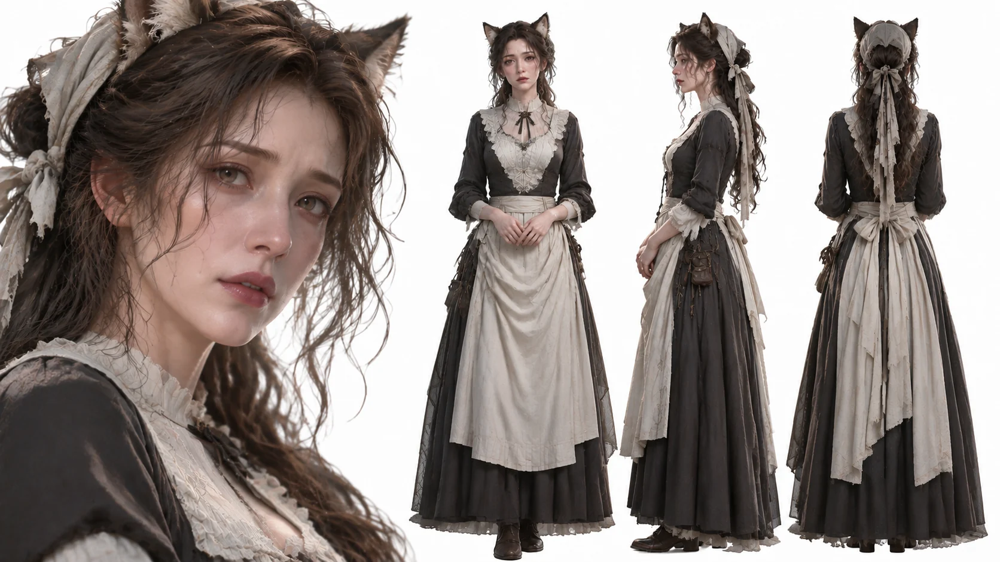
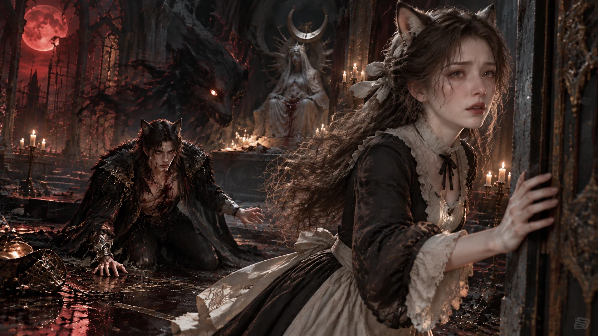
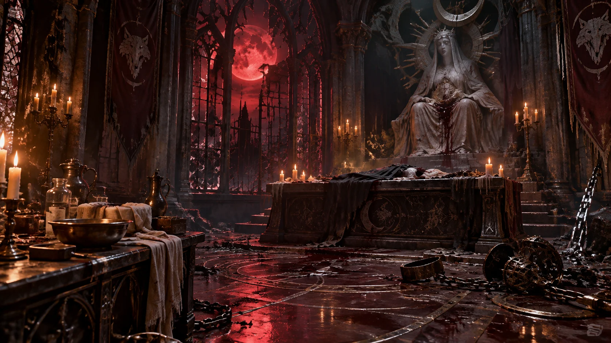
以中世纪哥特美学与狼人角色为视觉核心的 AI 生成短片。通过角色设定、暗黑场景和红色月光建立统一的视觉风格，并以动态影像呈现最终创作成果。
项目将人物外观设计与环境氛围结合：狼人贵族的黑羽披风、维多利亚女仆的黑白服饰，以及破败圣殿、血月等视觉元素共同构成暗黑奇幻的世界观。
本项目展示 AI 视觉生成与短片整合实践。若后续补充具体使用的生成工具、剪辑软件、个人负责环节与制作时长，可进一步完善为更有说服力的项目案例。
测试片段 · 从 Everly 触碰门框开始。舞台动作、角色对白与特效说明分层呈现。
从角色概念图、造型迭代到最终视频，以制作过程素材辅助呈现创作思路。
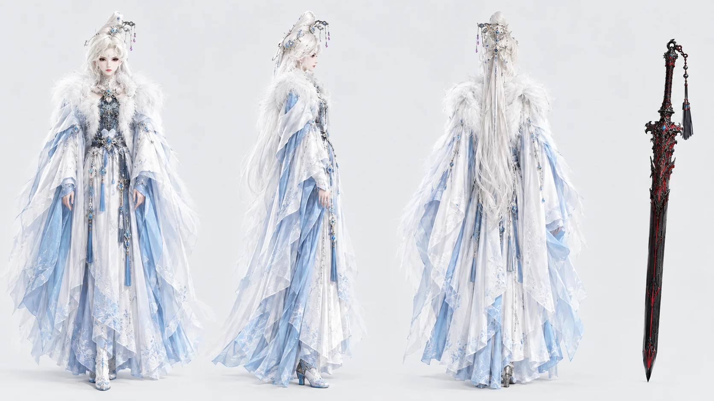
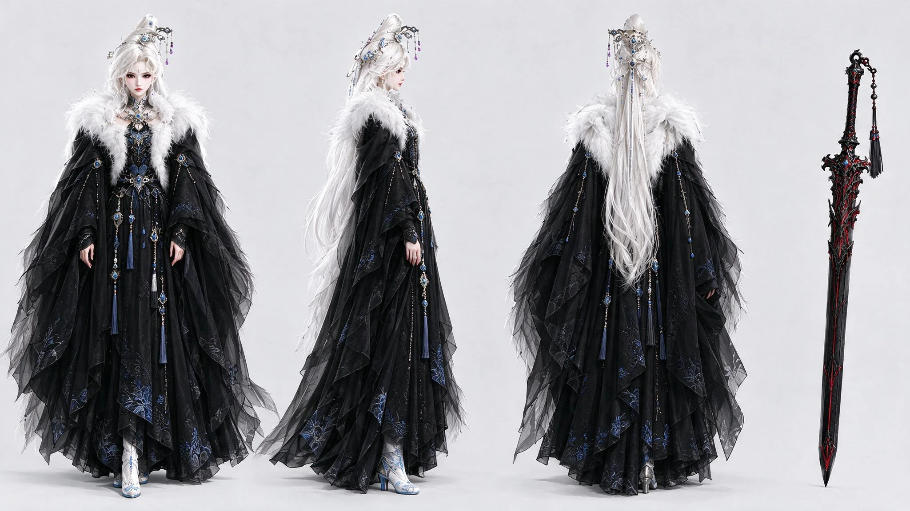
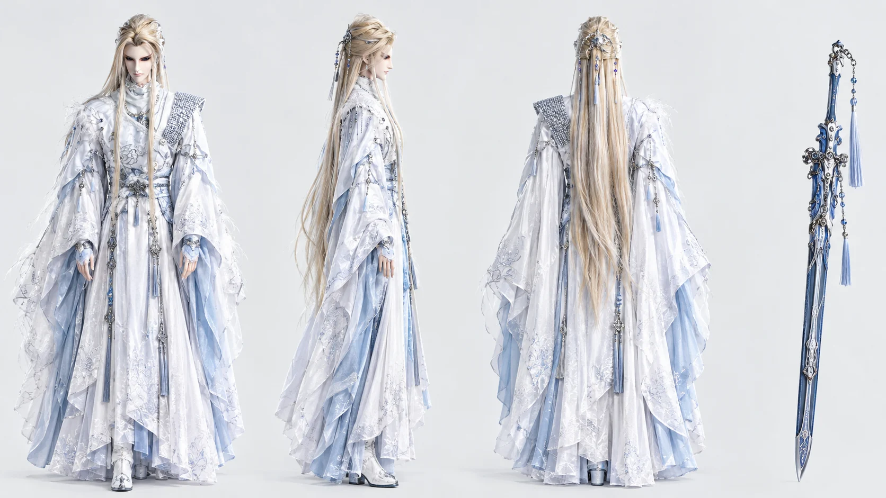
以东方奇幻人物为核心的 AI 视觉与视频创作项目。通过角色三视图、服装配色迭代与武器设计建立视觉参考，再以最终成片呈现动态效果。
制作过程素材展示了不同角色的造型方向：冰白与浅蓝构成清冷华丽的视觉基调，黑色服装版本用于探索更具反差的气质表达；另一组白银华服与佩剑设定则延续东方剑者的优雅与锋芒。
本项目以 AI 生成图像作为角色开发与视觉探索素材，并以最终视频作为主要成果。后续可补充具体生成平台、剪辑软件、制作周期及个人负责环节，让项目说明更贴近岗位要求。
项目尚在制作阶段，目前展示角色、服装、道具与场景的基础设定；最终视频完成后将在这里更新。
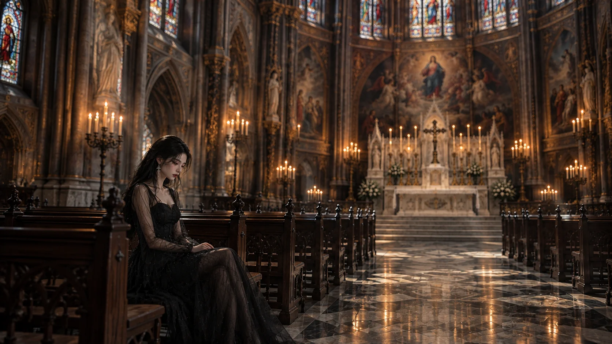
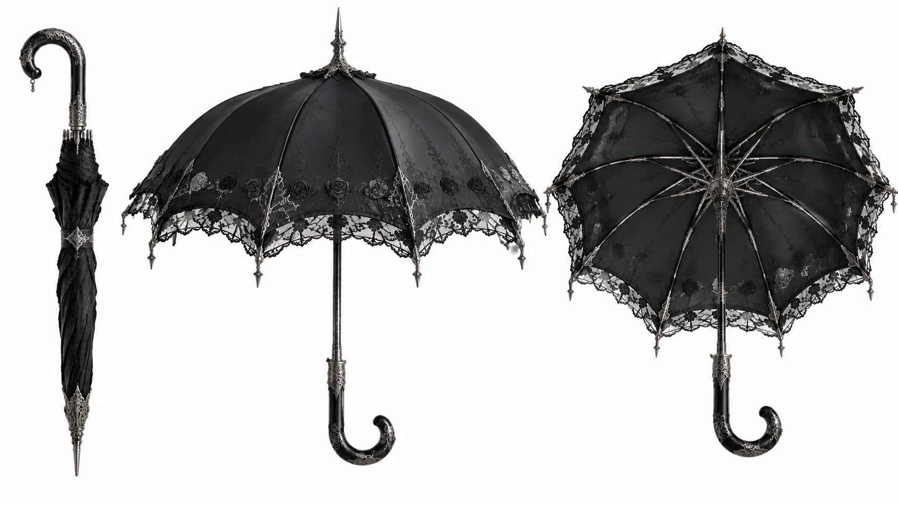
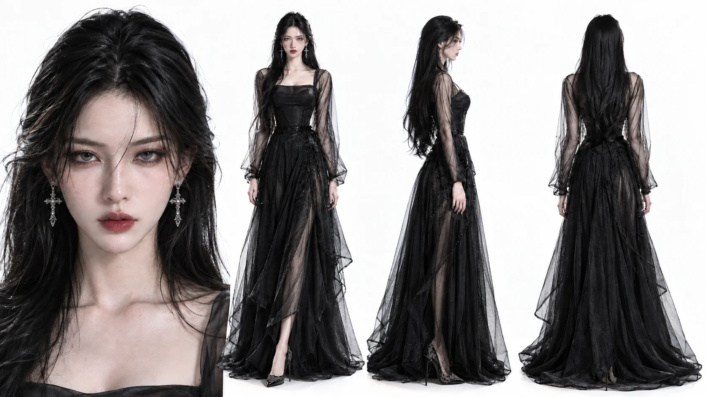
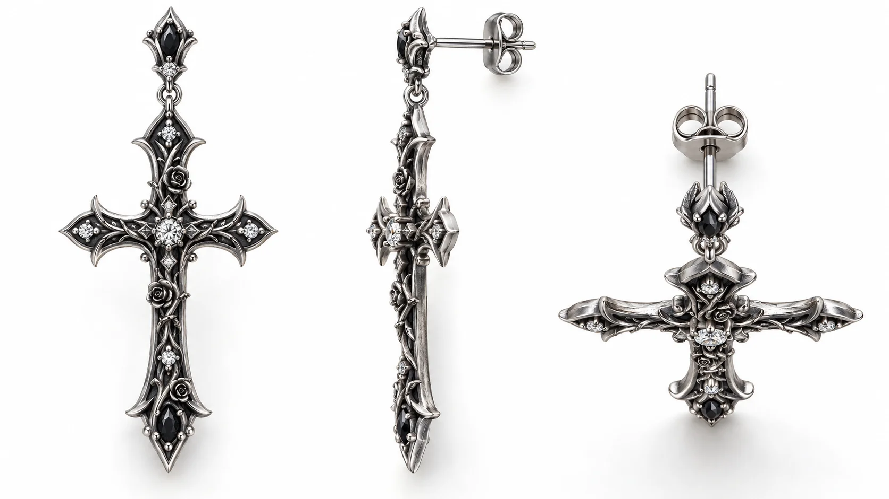
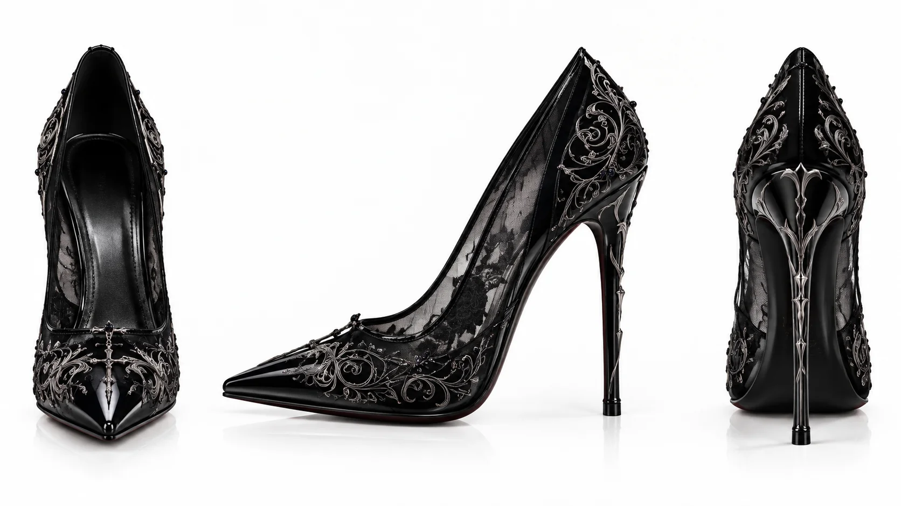
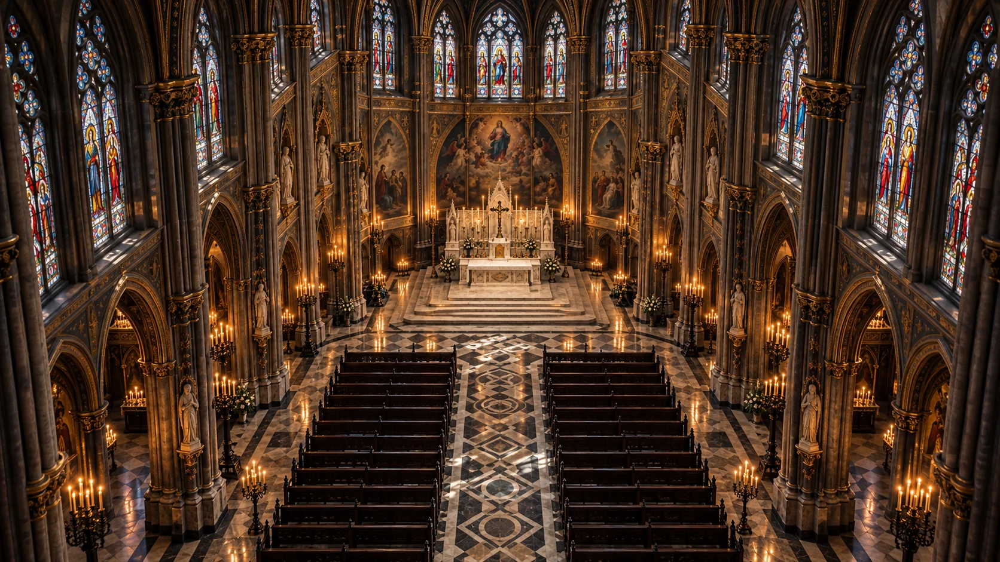
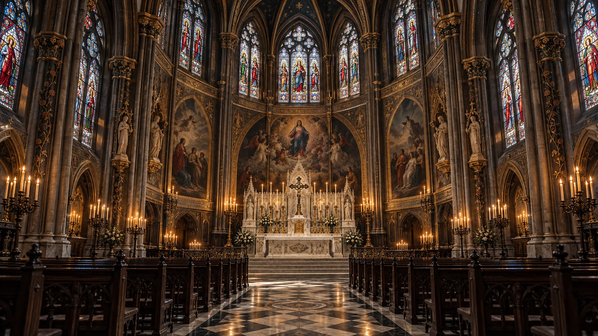
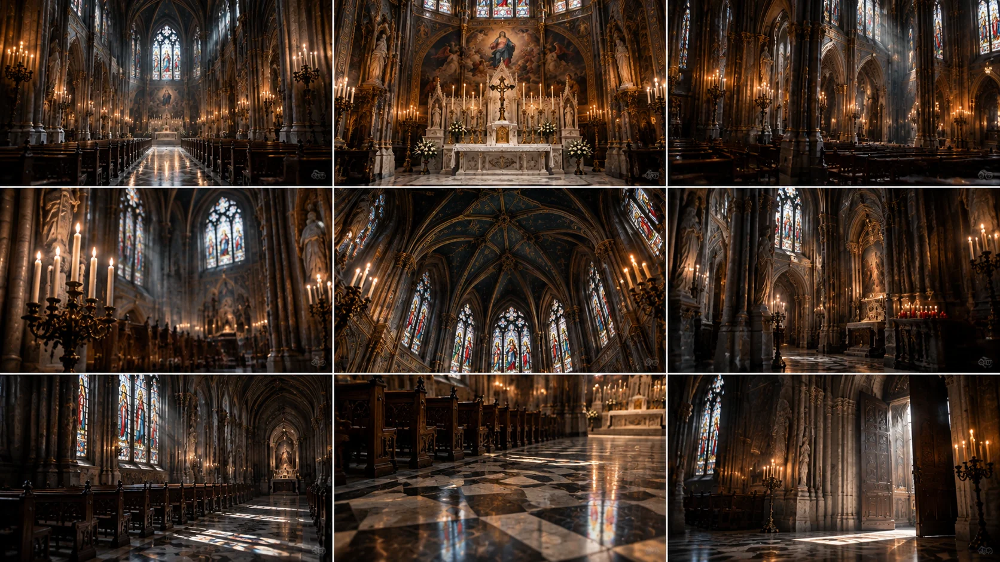
以黑纱礼服、黑银饰品与烛光教堂构建冷峻而华丽的哥特视觉世界。目前处于前期设定阶段，先建立人物造型、关键道具与场景氛围，为后续 AI 视频制作统一视觉方向。
整体以黑色、银色与暖金烛光形成对比。人物造型强调轻薄黑纱、修长轮廓与克制的妆容；十字耳坠、蕾丝高跟鞋和黑色蕾丝伞作为细节道具，进一步强化角色辨识度。教堂场景则通过彩绘玻璃、烛台、纵深透视与地面反光，营造庄严、神秘且带有情绪张力的空间。
作品集不只展示结果，也呈现创作过程。围绕项目目标，先确定人物与环境的视觉方向，再生成关键素材，最后通过视频剪辑将素材组织为完整成片。
明确题材、人物特征、服装细节与画面风格。
制作角色设定图与场景画面，建立视觉素材库。
整合动态画面与节奏，输出可观看的短片成品。